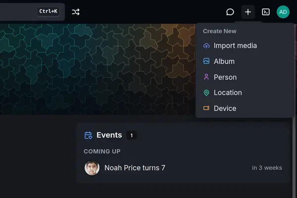
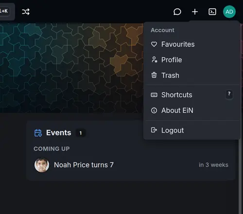

This page shows the parts of EiN's web interface and what each one does: the top bar, the sidebar, the headers of pages, and the dialogs and side panel that pages open in. It also covers signing in and out. It is for everyone who uses EiN in a browser.
Sign in
Open the address your administrator gave you, for example http://ein.local:8080, in a current
browser. EiN shows its sign-in page.

- In Username or e-mail, type your username, or the e-mail address of your account.
- In Password, type your password. The eye at the right of the field shows what you typed.
- Choose Sign in, or press Enter.
EiN loads afresh and opens Home. If you followed a link to a particular page while signed out, you land on the sign-in page first and go on to that page once you are in.
If you cannot sign in
The sign-in page says what went wrong in a red box above the fields:
| Message | What it means | What to do |
|---|---|---|
Username or e-mail is required |
The first field is empty. | Fill it in. |
login: authentication failed |
The username or e-mail, or the password, is wrong. EiN does not say which, so that nobody can find out which accounts exist. | Check both and try again. If you have forgotten your password, ask an administrator to set another one. |
login: account disabled |
Your password is right, but an administrator has turned off sign-in for your account. | Ask an administrator. |
login: password reset required |
Your password is right, but your account is waiting for an administrator to set a password. | Ask an administrator to set one. |
login: too many failed sign-ins; try again in N s |
There have been too many wrong passwords from your network address. | Wait the number of seconds it gives, then try again. |
A wrong password takes about a second to be answered. After five failed sign-ins from one network address, EiN makes that address wait before it checks another password: one second at first, doubling with each further failure, up to 15 minutes. After five failures on one account, each attempt on that account is slowed by up to 10 seconds, but the account is never locked, so someone guessing at your password cannot lock you out. Failures are forgotten an hour after the last one. Administrators find the rest in Accounts and groups.
Browse without signing in
An administrator can let people look around without an account, with Visitors may browse under
Settings → Permissions (the setting
CFG_GUEST_BROWSING). It is off by default, and
then anyone who has not signed in is sent to the sign-in page.
Where it is on, opening EiN takes you straight to Home, and the sign-in page offers Browse without signing in. As a visitor:
- you see only what has been shared with visitors, and you cannot change anything;
- the top bar has a Sign in button where the terminal button and your picture would be, and no Create menu;
- the sidebar leaves out Settings, and with the Archive Staging;
- a page that belongs to an account, such as Profile, Trash, Favourites, About EiN or a form that creates something, sends you to sign in, and back to that page afterwards.
Someone can also send you a share link, an address with /s/ in it. It opens what was shared
without an account, even where visitors may not browse. There, you see only the pages of what the
link opens: no sidebar and no search box, and the EiN mark leads back to what was shared.
Sharing covers share links, including the page that says This link no longer
works.
Sign out
Choose your picture at the right end of the top bar, then Logout. EiN signs this browser out, ends your terminal sessions and shows the sign-in page.
Your sign-in also ends by itself. By default a browser stays signed in for 1 day after its last visit, and a session unused for 12 hours ends; an administrator can change both under Settings → Permissions. When your sign-in ends, or an administrator disables your account, the page reloads and shows the sign-in page.
The parts of the screen
Every page sits in the same frame: the top bar across the top, the sidebar down the left, the page itself in the middle, and the side drawer at the right when something is open in it.

What you see depends on the modules installed on your EiN. EiN itself gives the frame, Home, Search, Settings, Statistics, Documentation and the administrator's pages. The Archive adds the pages for photos, albums, people and places, and the assistant adds the chat. This page describes the frame every EiN has and marks what each module adds; the screenshots show EiN with both installed. Without modules, the sidebar holds only EiN's own entries, and the top bar has no Random album, chat button or Create menu.
The browser tab is titled with the page's name followed by · EiN, for example Albums · EiN;
on Home it says EiN alone. The interface is in English and always dark: there is no light theme
and no other language.
The top bar
From left to right:
| Part | What it does |
|---|---|
| The EiN mark and name | Go to Home. On a phone the mark opens and closes the menu instead. |
| The search box, Search for anything | Finds pages, and with the Archive albums, people and places, as you type; Enter searches everything. Ctrl+K (⌘+K on a Mac) puts the cursor in it from anywhere. Search and the finder explains it. |
| Random album (two crossing arrows) | Opens an album picked at random; Alt+R does the same. Added by the Archive. |
| Disconnected (with a red dot) | Shown only while the page's connection to EiN is lost; on a phone it is a red crossed-out plug. EiN tries again by itself every second or two. |
| Uploads | Appears once you upload something, such as files dropped on the terminal. While files are going up it is a ring, with "Uploading N of M" in its tooltip; choose it for the files, Cancel, Retry failed and Clear. With the Archive, see Getting your photos in. |
| Chat (a speech bubble) | Opens the chat in the side drawer; choose it again to close the drawer. Added by the assistant; see Chatting with the assistant. |
| Create (a plus) | The Create New menu, below. Signed in only, and only where a module gives the menu rows. |
| Toggle Terminal (Alt+T) | Opens and closes the terminal, which drops down over the page. Signed in only, and not on a phone. See The terminal. |
| Your picture | The account menu, below. Its tooltip is your name. |
| Sign in | For visitors only, in place of the terminal button and your picture. |
A button that opens a page in the side drawer is lit while the drawer shows it, and it is left out on that page itself: on the Chat page there is no chat button.
The Create menu
Choose the plus to make something. Each row opens a form in a dialog over the page you are on. EiN itself puts no rows in this menu; the modules do. Without a module that adds one, there is no plus in the top bar. With the Archive installed, the menu has these rows:


| Row | Opens | More |
|---|---|---|
| Import media | Import media: choose a category in staging and the files or folders to bring in. | Getting your photos in |
| Album | Create Album | Albums |
| Person | Create Person | People and faces |
| Location | Create Location | Locations and the map |
| Device | Register Device | Devices and GPS tracks |
The account menu
Choose your picture at the right end of the top bar. The menu is headed Account.


| Row | Shown | What it does |
|---|---|---|
| Me | With the Archive, when your account is linked to a person | Opens that person's page. |
| Favourites | With the Archive | The pictures you have marked with a heart. |
| Profile | Always | Your name, description, preferences and password. |
| Trash | Always | What you have deleted, to restore or remove for good. |
| Shortcuts ? | Always | Opens the list of keyboard shortcuts. |
| About EiN | Always | A dialog with EiN's version, how long it has been running, the installed modules with their versions, the services it uses (the language model, the media service) and the versions of PostgreSQL and Deno it runs on. |
| Administer… | For members of the sudo group, outside admin mode |
Admin mode, below. |
| Leave admin mode | In admin mode | Back to your own rights. |
| Logout | Always | Signs you out. |
Your profile, favourites and trash covers Me, Favourites, Profile and Trash.
With the Archive, your picture is the cover photo of the person your account is linked to. Without
a linked person it shows the first letters of your username, as an image drawn by the outside
service ui-avatars.com; without a connection to the internet, the first letter of your name shows
instead.
Admin mode
A member of the sudo group can act as the administrator for a while, the way sudo works on
other systems, without signing in as admin:
- Choose your picture, then Administer….
- In the Administer dialog, "Enter your password again to act as the administrator until you sign out or leave admin mode.", type your own password in Password.
- Choose Administer.
The page reloads with the administrator's rights. While they last, your picture has an orange ring and a small orange shield at its lower left, and its tooltip ends in "(administrator)". A wrong password shows "That is not your password."
Choose Leave admin mode in the same menu to go back to your own rights; signing out ends admin
mode as well. Accounts and groups explains who is in sudo and the admin
command that does the same in the terminal.
The sidebar
The sidebar lists the pages, in four sections. The first has no heading.
| Section | Entry | Opens | Shown to | Added by |
|---|---|---|---|---|
| Home | What the modules put there: Home and statistics; with the Archive, On this day, News and Events: Memories, news and events on Home | everyone | EiN | |
| Chat | Conversations with the assistant: Chatting with the assistant | everyone | assistant | |
| Media | Every photo, video, recording and document: Media, Year and labels | everyone | archive | |
| Staging | Your uploads waiting to be sorted: Sorting in staging | signed in | archive | |
| Explore | Search | What the modules make searchable; with the Archive, photos, videos, albums, people and places, by name, date or @mention: Search and the finder | everyone | EiN |
| Explore | Year | One year's pictures: Media, Year and labels | everyone | archive |
| Explore | Map | Pictures and tracks on a map: Locations and the map | everyone | archive |
| Browse | Albums | Albums | everyone | archive |
| Browse | People | People and faces | everyone | archive |
| Browse | Locations | Locations and the map | everyone | archive |
| Browse | Devices | Cameras, phones, scanners and trackers: Devices and GPS tracks | everyone | archive |
| System | Nodes | A file manager over the whole tree | administrators | EiN |
| System | Dashboard | How EiN is doing: Health and the dashboard | administrators | EiN |
| System | Settings | How this installation is set up: Configuration | signed in | EiN |
| System | Statistics | How the archive has grown: Home and statistics | everyone | EiN |
| System | Documentation | EiN's own guide, and the commands, settings and modules installed on your EiN | everyone | EiN |
An entry added by a module is there once that module is installed; The Archive
and The Assistant describe what each brings. "Administrators" means the
admin account, or someone in admin mode. For anyone else Settings opens on its Modules
tab, the only one they get. A section left with no entries is not shown.
- Where you are. The entry of the page you are on is lit, with a bar in the accent colour at its left.
- Fold a section. Click its heading (Explore, Browse or System) to fold it away, and again to unfold it. A folded section still shows the entry of the page you are on. This browser remembers which sections you folded.
- Collapse to icons. The button at the foot of the sidebar, Collapse to icons, narrows it to a column of icons; hold the pointer over an icon to see its name. The same button, then called Show labels, brings the names back. This browser remembers the choice.
You and your administrator can rename, reorder, hide and add entries: see Your sidebar and top bar. On a phone the sidebar is out of sight until you choose the EiN mark or swipe right: see EiN on a phone.
Page headers
Most pages open with a header: a band in EiN's coloured pattern with the page's title, a line under it, and often counts.
- Actions stand at the header's right: Upload, Share and Edit as buttons, in that order, on the pages that offer them, then ⋮ (More actions) with the page's other actions and Move to trash last. Where the header is narrow the buttons fold into ⋮ too. Actions that change something are offered only on what you may change.
- Tabs sit along the header's foot, such as Media, Map and Info on the Archive's
album pages. The chosen tab is part of the page's address (
?tab=), so a link can open a given tab; see Addresses in the web interface. - Scrolled down, the header's last row, its tabs or filters, stays in view under the top bar, with ⋮ holding every action of the page. On a wide screen the page's name appears at that row's left.
Pages that are tools rather than things to look at, such as Nodes, Trash and Chat, have a header one line high instead, with the title at the left and the page's controls at the right. The Map page has no header; the map fills the page.
Move to trash puts the thing in your trash and leaves its page. A message at the foot of the screen says it was moved, with Undo to put it back.
Pages, dialogs, the side drawer and full screen
The same page can open in four ways. Which one you get depends on where you open it from.
| Opens as | What you see | Examples | To close it |
|---|---|---|---|
| A page | The page in the middle of the frame; the address in the browser changes. | Anything in the sidebar | The browser's Back |
| A dialog | A box over the dimmed page, with a coloured header band, an icon and a title. On a phone it fills the screen, except a question that only asks you to confirm. | The Create forms, About EiN, Keyboard shortcuts | The × at the top right, Esc, or a click outside the box. On a phone, Back too. |
| The side drawer | A panel at the right. On a wide screen it sits beside the page, which makes room for it; on a narrower one it covers the page. | The chat, from the assistant's chat button | Its top-bar button again. Where it covers the page, Back closes it too. |
| Full screen | Over everything, the top bar included. | The Archive's viewer for photos, videos and recordings | Back or Esc |
A few things to know about each:
- A dialog is not part of the address, so reloading the page closes it. A link inside a dialog opens its page in the frame and closes the dialog.
- The side drawer keeps the width you give it. Drag its left edge, or click the edge and press ← or → to make it 20 pixels wider or narrower, between 360 and 960 pixels (460 at first). This browser remembers the width. On the drawer's own page, such as Chat, the drawer steps aside, because the page shows the same thing at full size. On a phone the chat button opens the chat as a dialog instead.
- Full screen is part of the address (
?fullscreen=), so a reload, or a link you send someone, opens it again. On a wide screen an open side drawer stays beside the viewer, so you can read the chat next to a photo; see Viewing photos, videos and recordings.
Keyboard shortcuts
Press ? anywhere outside a text field, or choose Shortcuts in the account menu, to see the Keyboard shortcuts dialog. It lists the keys that work anywhere, and a group for each part of the screen that has keys of its own, such as the viewer or the Nodes explorer, while that part is on screen.

| Keys | What they do |
|---|---|
| Ctrl+K (⌘+K on a Mac) | Search, or go to a page, person or album; > for commands |
| ? | These shortcuts |
| Alt+T | Show or hide the terminal |
| Alt+N | New terminal tab |
| Alt+R | Random album (with the archive) |
On a Mac the list shows Alt as ⌥. Where a dialog or the viewer covers the search box, Ctrl+K opens the same search as a dialog of its own. Every key EiN knows, by area, is in Keyboard shortcuts.
Messages and other things you will see
- Messages at the foot of the screen say what has happened, often with Undo. They leave by themselves after 4 seconds, or 8 seconds when they offer an action. EiN has no list of past messages.
- Back to top, a round button at the lower right, appears once you have scrolled a screen's height down a page.
When something goes differently
| What you see | Why | What to do |
|---|---|---|
| Disconnected in the top bar | The connection to EiN dropped: your network, or EiN restarting. | Wait; EiN reconnects by itself within a second or two. If it stays, ask your administrator whether EiN is running. |
| The sign-in page appears while you were working | Your sign-in ended, or an administrator disabled your account. | Sign in again. |
| Nothing here: "There is no page at … The link may be mistyped, or what it led to has moved." | The address leads to no page. | Go back or Go home. |
| This page did not load | Its code could not be fetched, usually because EiN was updated while the tab was open. | Reload. |
| Something broke on this page: "The rest of EiN still works." | An error while drawing the page; the error text is shown under it. | Reload. If it keeps happening, send the error text to your administrator. |
| An entry you expect is not in the sidebar | It is for administrators, its module is not installed, or someone hid it. | See the sidebar table above, Modules and Your sidebar and top bar. |
Where to go next
- Search and the finder: everything the search box and the Search page can find.
- The terminal: the command line behind Alt+T.
- Keyboard shortcuts: every key, by area.
- Your sidebar and top bar: rename, hide and add entries.
- EiN on a phone: the menu behind the mark, swiping and adding EiN to the home screen.
- Your profile, favourites and trash: your own pages from the account menu.
- Addresses in the web interface: every page's address, for links.